Effects of misinformation on online interactions
Roskilde winter school 2025
Jula Luehring
University of Vienna & Complexity Science Hub

Misinformation and emotions
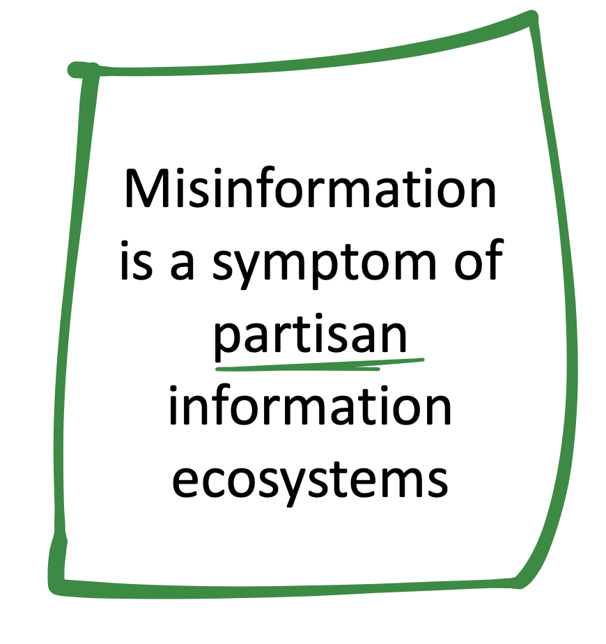
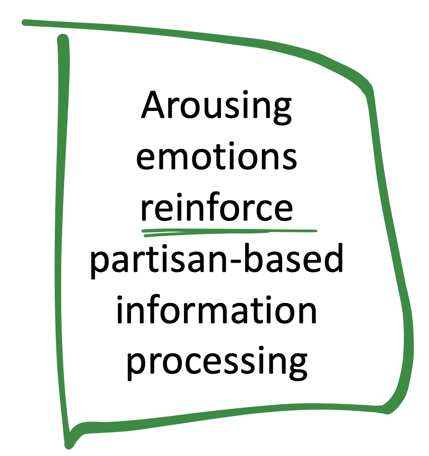
Do emotions make people fall for misinformation?
Emotional state
Replication of Martel et al., 2020
False/accurate COVID-19 news headlines
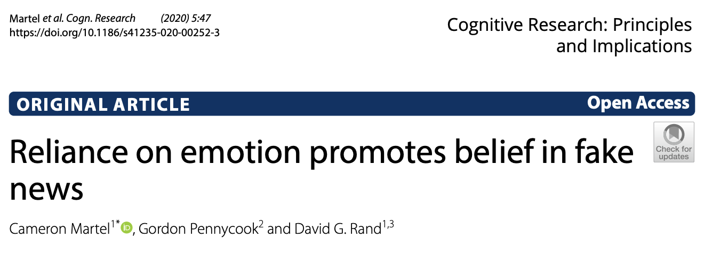
\(\rightarrow\) No effects of emotional state on misinformation acceptance
Luehring*, Shetty*, et al., 2024
Emotional response
But more anger and less joy in responses to false news
🗯 “Fake”, “Bullshit”, “Nonsense”

\(\rightarrow\) Function of emotion depends on pre-existing beliefs
\(\rightarrow\) Emotional response = the better measure?
Misinformation on social media
Collective dynamics
Moralizing & arousing content gets high engagement
Misinformation: conflict, negative, distrustful
- but only 0.3-6% in 5 studies from 2016-2021
- elite and partisan superspreaders
\(\rightarrow\) Misinformation is embedded in inter-group dynamics
\(\rightarrow\) Secondary effects on hate and distrust?
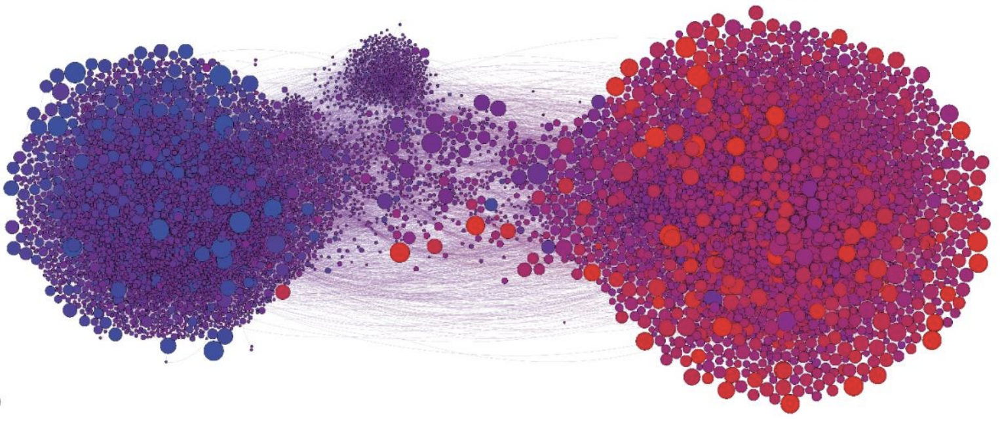
What are effects of misinformation on online interactions?
There are problems
- Misinformation is measured as clearly true or false instances,
neglecting less extreme types,
making it hard to isolate effects of misinformation.
- Different effects of emotions are overlooked by
mixing up timings of emotions,
ignoring the function of emotions,
measuring positive and negative sentiment only.
Our objectives
- Collecting a systematic, large-scale and long-term data set for the German-speaking context
Continuous trustworthiness ratings by NewsGuard (#1)
- Approximating causal inference to test the effects of misinformation on different emotions
Non-parametric matching strategy (#2)
Data collection
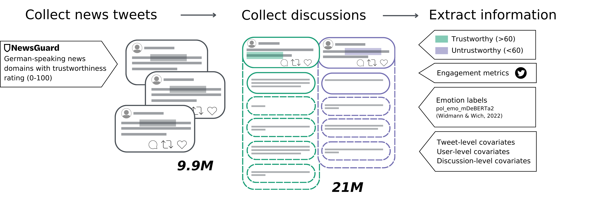
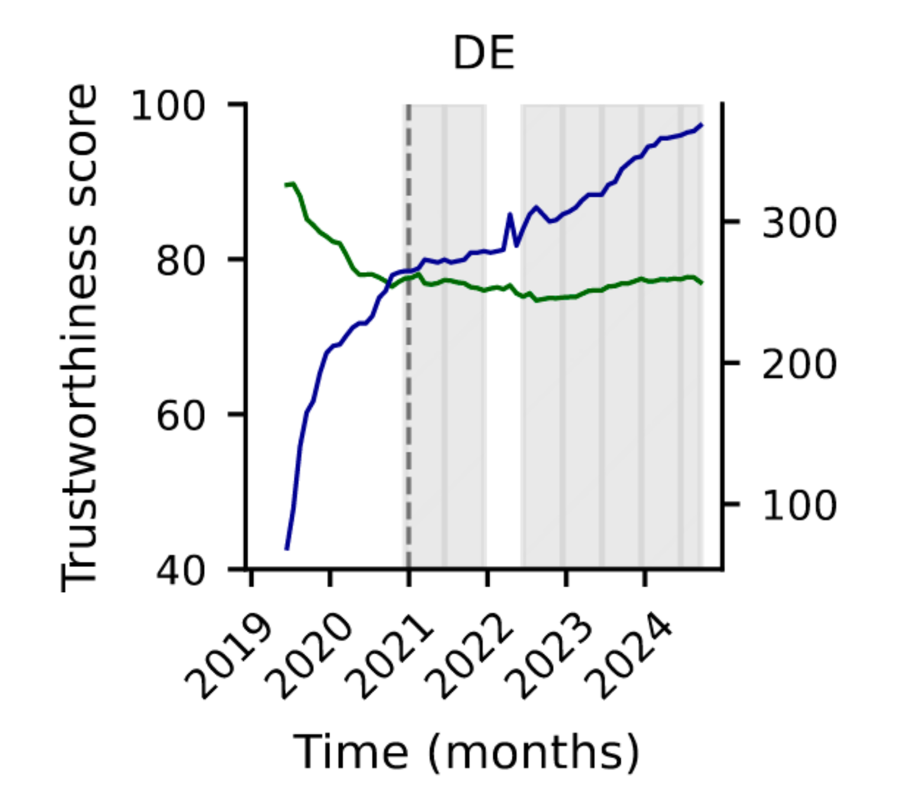
\(\rightarrow\) NewsGuard ratings and coverage are stable and complete for DE
Luehring, Lasser et al., 2025
Classification of emotional expressions
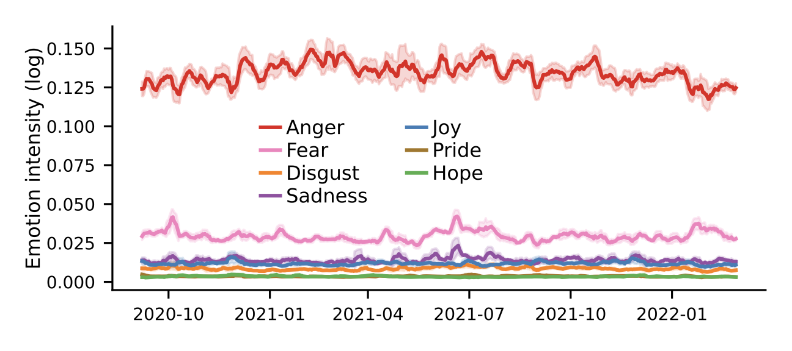pol_emo_mDeBERTa2 (macro F1=0.7)
Widmann & Wich, 2022
Non-parametric matching
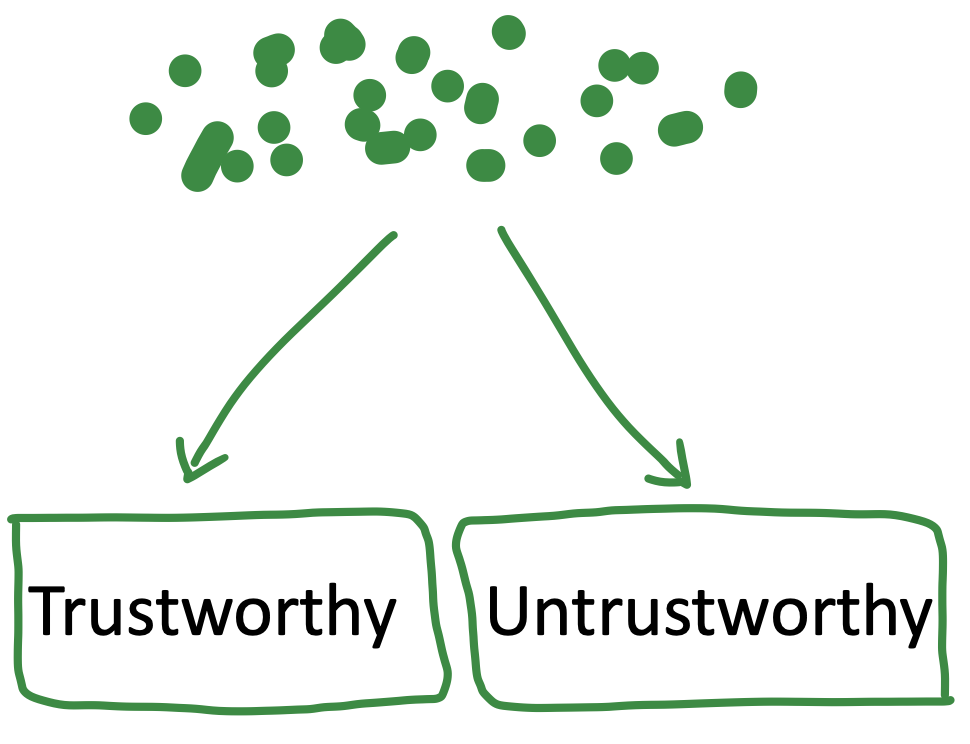
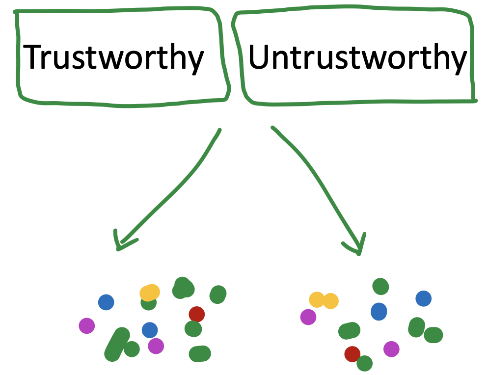
Matching evaluation
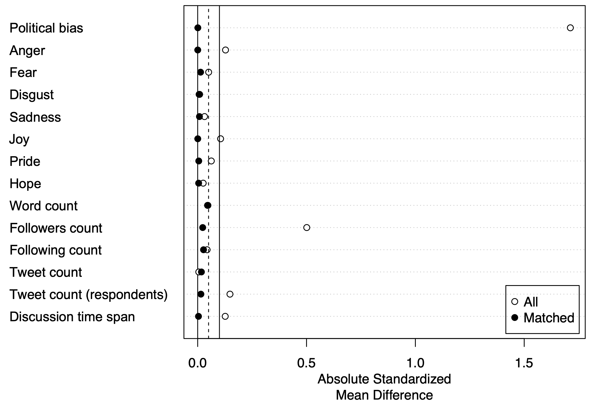Matching with Nearest Neighbor and Mahalanobis distance
Ho et al., 2007
Results
Descriptives
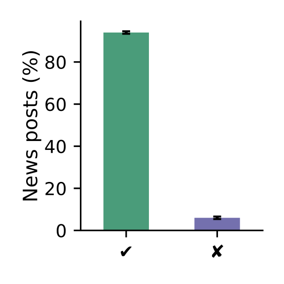
\(\rightarrow\) robust 6% of untrustworthy news
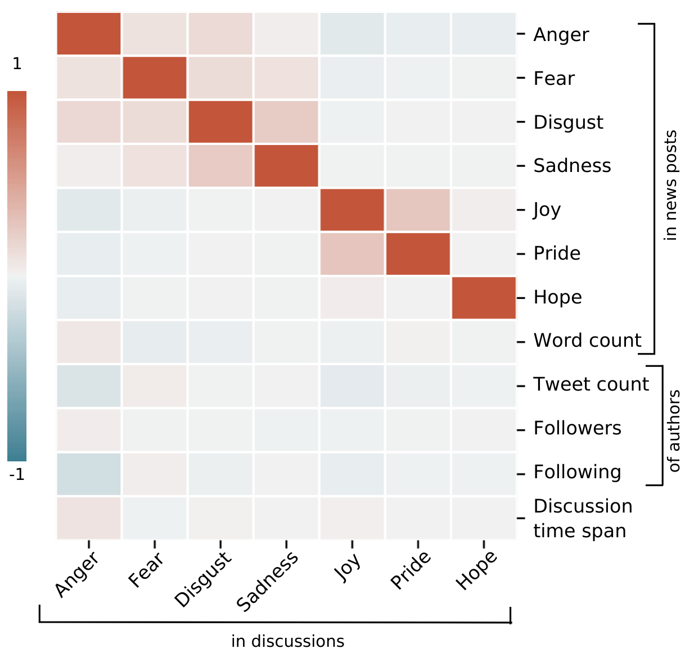
\(\rightarrow\) matching mitigates carryover effects
Effects on engagement
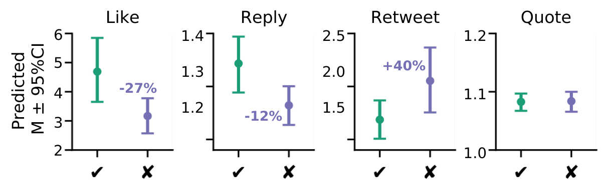Zero-inflated negative binomial models (bootstrapped CIs)
\(\uparrow\) more retweets for tweets with untrustworthy links
\(\downarrow\) but fewer likes & replies
Zeileis et al., 2008
Effects on emotions
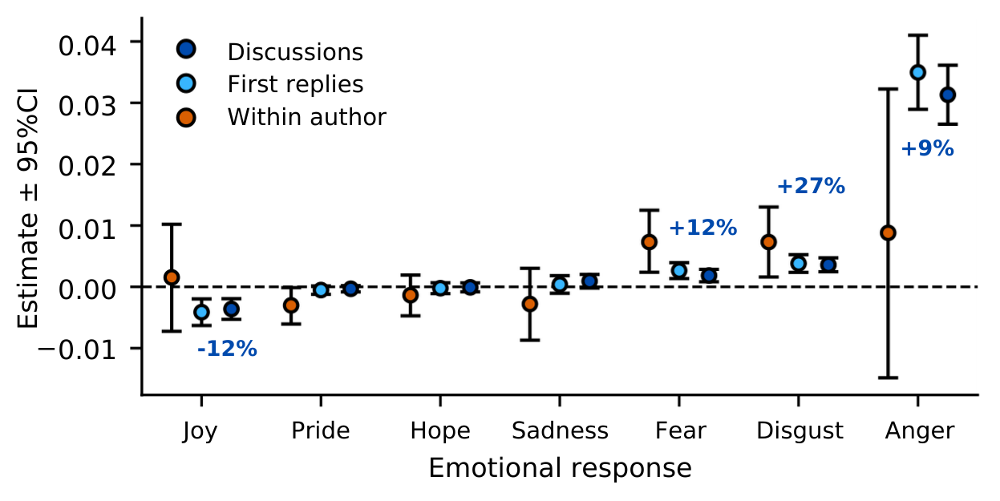OLS regression models (bootstrapped CIs)
\(\uparrow\) more anger, disgust and fear
\(\downarrow\) and less joy in response to untrustworthy sources
Conclusions
Sources with lower trustworthiness get unique engagement
- but reach is overall limited
Sources with low trustworthiness predict anger & other negative emotions
- but emotions in discussions largely reflect emotions in initial post
Current project
Analyzing a Twitter panel of Austrian users
- timeline of 30k Austrian Twitter users (200M tweets)
- classification of emotions, topics, trustworthiness, (issue stance)
- linkage with survey data from the ACPP
Questions
What are differences between user groups?
What is the temporal development before/after engagement with misinformation?
\(\rightarrow\) uncertainty/anxiety, frustration, group identity, belief networks